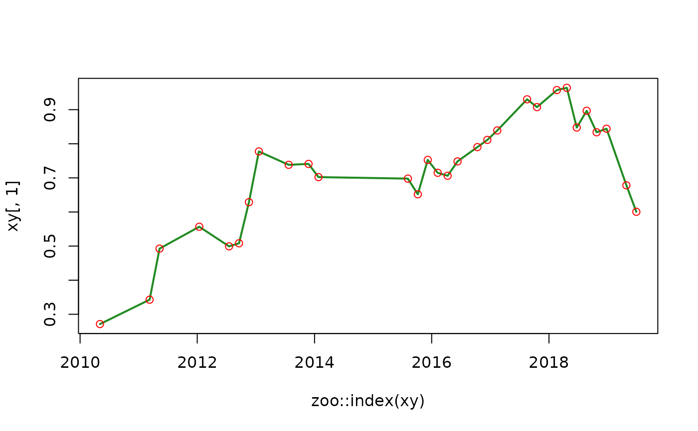

Internal function used in zoo_resample(). It finds optimal df parameter of a smoothing spline model y ~ x fitted with stats::smooth.spline() that minimizes the root mean squared error (rmse) between observations and predictions, and returns a model fitted with such df.
utils_optimize_spline(x = NULL, y = NULL, max_complexity = FALSE)(required, numeric vector) predictor, a time vector coerced to numeric. Default: NULL
(required, numeric vector) response, a column of a zoo object. Default: NULL
(required, logical). If TRUE, RMSE optimization is ignored, and the model of maximum complexity is returned. Default: FALSE
Object of class "smooth.spline".
Other internal_data_processing:
utils_global_scaling_params(),
utils_optimize_loess(),
utils_rescale_vector()
#zoo time series
xy <- zoo_simulate(
cols = 1,
rows = 30
)
#optimize splines model
m <- utils_optimize_spline(
x = as.numeric(zoo::index(xy)), #predictor
y = xy[, 1] #response
)
print(m)
#> Call:
#> stats::smooth.spline(x = model_df$x, y = model_df$y, df = complexity_value,
#> all.knots = TRUE)
#>
#> Smoothing Parameter spar= -1.009979 lambda= 8.31192e-16 (21 iterations)
#> Equivalent Degrees of Freedom (Df): 30
#> Penalized Criterion (RSS): 8.485593e-20
#> GCV: 0.01348588
#plot observation
plot(
x = zoo::index(xy),
y = xy[, 1],
col = "forestgreen",
type = "l",
lwd = 2
)
#plot prediction
points(
x = zoo::index(xy),
y = stats::predict(
object = m,
x = as.numeric(zoo::index(xy))
)$y,
col = "red"
)
